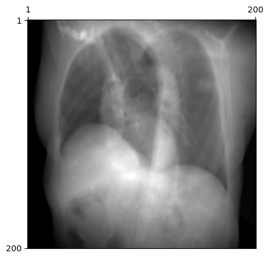

This is a tutorial on the 3D geometry used in DiffDRR. It includes:
An overview of the 3D visualization functions
A description of the projective geometry underlying DRR rendering
A brief explanation of the connection to C-arms
3D visualization with PyVista
Visualizing the 3D geometry of the X-ray detector in DiffDRR can be a helpful sanity check and is useful for debugging. We enable visualization of the DiffDRR setup using PyVista. The dependencies are pyvista, trame, and vtk.
The 3D visualization functions in DiffDRR perform the following steps:
Extract a mesh from your CT volume
Plot a pyramid frustum to visualize the camera pose
Plot the detector plane with the DRR embedded as a texture
Draw the principal ray from the X-ray source to the detector plane
We currently support the following backends for extracting meshes from CT scans:
As of DiffDRR v0.4.0, we also support the rendering of 3D labelmaps (e.g., segmentations of CT scans with TotalSegmentator).
Tip
To use surface_nets to extract a mesh, ensure you have installed pyvista>=0.43 and vtk>=9.3. Otherwise, you can use marching_cubes, which is slower and produces meshes with holes.
# Read in the CT volumesubject = load_example_ct()# Make a mesh from the CT volumect = drr_to_mesh(subject, "surface_nets", threshold=225, verbose=True)
# Initialize the DRR module for generating synthetic X-raysdrr = DRR(subject, sdd=1020.0, height=200, delx=2.0).to(device)# Make a poserot = torch.tensor([[45.0, 30.0, 0.0]], device=device) /180* torch.pixyz = torch.tensor([[0.0, 800.0, 0.0]], device=device)pose = convert(rot, xyz, parameterization="euler_angles", convention="ZXY")plot_drr(drr(pose))plt.show()

# Make a mesh from the camera and detector planecamera, detector, texture, principal_ray = img_to_mesh(drr, pose)# Make the plotplotter = pyvista.Plotter()plotter.add_mesh(ct)plotter.add_mesh(camera, show_edges=True, line_width=1.5)plotter.add_mesh(principal_ray, color="lime", line_width=3)plotter.add_mesh(detector, texture=texture)# Render the plotplotter.add_axes()plotter.add_bounding_box()plotter.show_bounds(grid="front", location="outer", all_edges=True)# plotter.show() # If running Jupyter locally# plotter.show(jupyter_backend="server") # If running Jupyter remotelyplotter.export_html("render.html")
2025-05-19 16:35:20.900 ( 21.193s) [ 7FAED28B5740]vtkXOpenGLRenderWindow.:1416 WARN| bad X server connection. DISPLAY=
from IPython.display import IFrameIFrame("render.html", height=500, width=749)
Rendering labelmaps
The SurfaceNets algorithm was actually originally designed for the visualization of 3D labelmaps. Running it on segmentation masks produced by TotalSegmentator produces detailed renderings.
X-ray imaging systems can be accurately modelled as pinhole cameras. What follows is a brief description of the projective geometry underlying pinhole cameras, as it applies to DiffDRR. A more comprehensive overview can be found in Hartley and Zisserman (Chapter 5) or numerous online resources.
Intrinsic parameters
In DiffDRR, the intrinsic parameters are
sdd : the source to detector distance (i.e., the C-arm’s focal length)
delx : the x-direction pixel spacing (in mm)
dely : the y-direction pixel spacing (in mm)
x0 : the principal point offset in the x-direction
y0 : the principal point offset in the y-direction
These direclty form the intrinsic matrix (with physical units) of a pinhole camera. For most imaging systems, these parameters are directly found in the DICOM.
Extrinsic parameters
The extrinsic parameters comprise an affine transform, written as \(\mathbf T \in \mathbf{SE}(3)\), which is an element of a particular manifold of \(4 \times 4\) matrices. There are many ways to parameterize affine transforms. For particulars on how this is implemented in DiffDRR, see the module diffdrr.pose.
The simplest way of parameterizing an affine transform is with a translation and a rotation written in Euler angles. In fact, this is how camera poses are often stored in DICOM.
This corresponds to the following sequence of transforms:
A translation of +800 along the y-axis
A rotation by 45 degrees about the z-axis
A rotation by 30 degress about the x-axis
which produces the oblique view visualized above.
What if the C-arm is behind the patient?
Many medical disciplies have C-arms where the source is positioned behind the patient (e.g., X-ray angiography). In these cases, the CT can be loaded with the PA orientation:
subject = load_example_ct(orientation="PA")
This will produce the desired behavior. The only difference is that the y parameter in rot needs to be negated.
On representations of rotations
There are many ways to represent 3D rotations, and Euler angles are but one option. In general, Euler angles are the most human-understandable parameterization. However, they’re not the best for optimization problems. For solving problems like 2D/3D registration, higher-dimensional representations have emperically better performance.